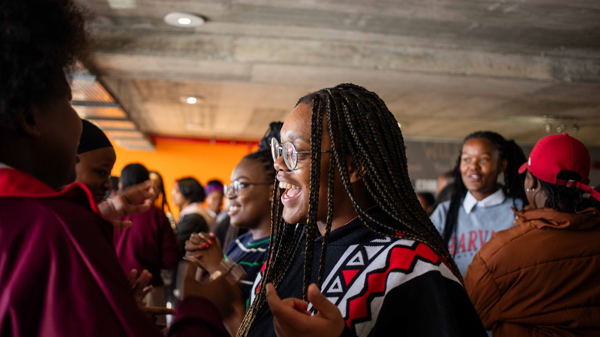
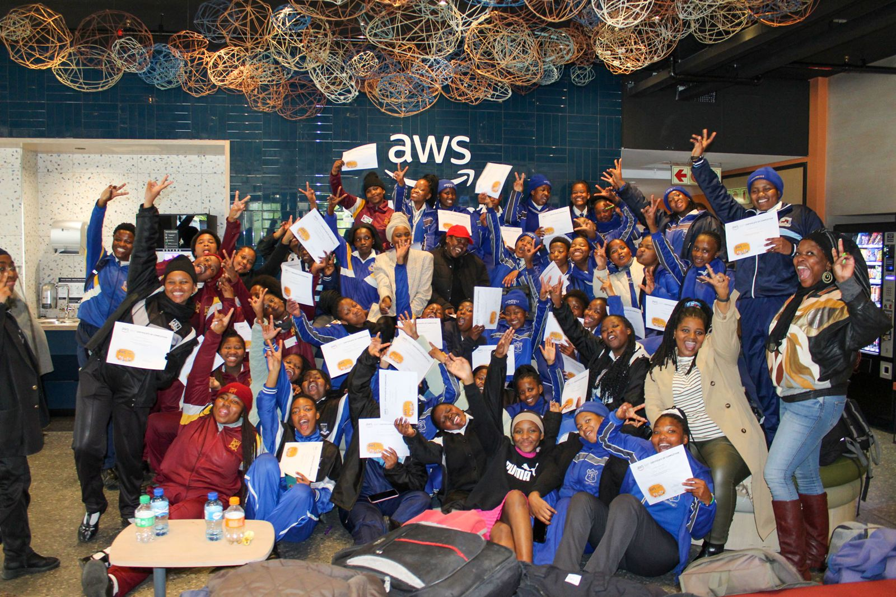
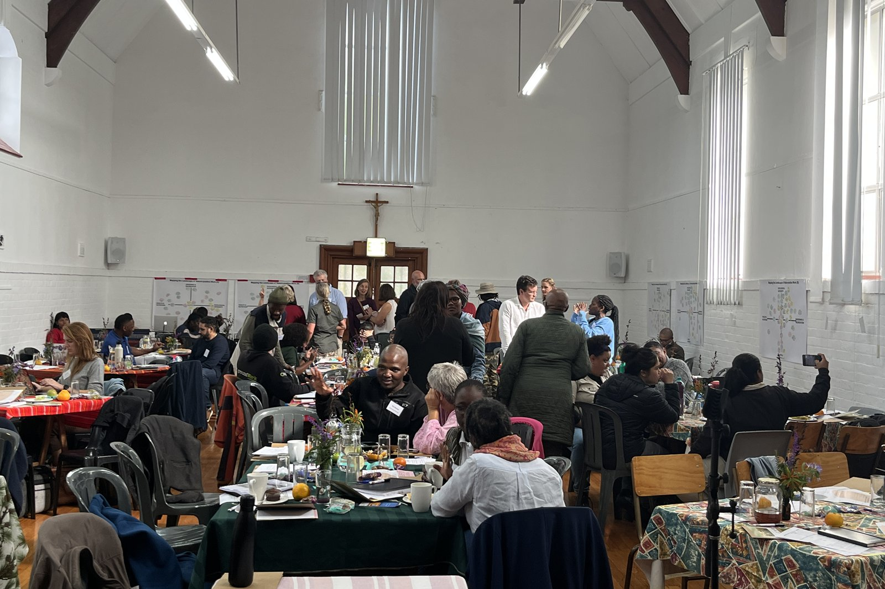
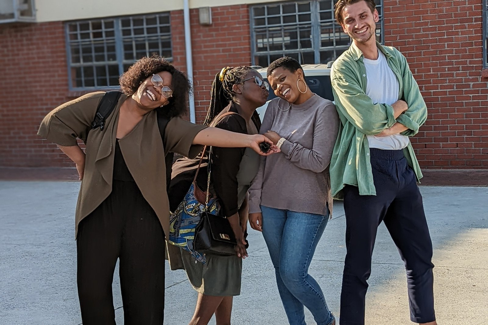
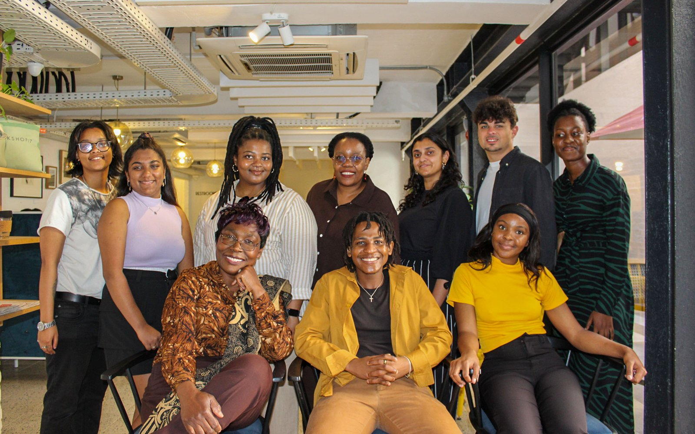

South African Social-Impact Incubator · Western Cape & National
Impact incubator in South Africa
Cohort mentorship, venture building, and civil society training for South African social entrepreneurs turning local ideas into lasting enterprises.
- Entrepreneurs supported
- 110
- Economic opportunities
- 375+
- Indirect beneficiaries
- 10,000+
Entrepreneurs supported
Social ventures incubated across South Africa through structured cohorts.
Economic opportunities
Jobs and sustainable livelihoods created by ORIBI-incubated founders.
Indirect beneficiaries
Community members reached through local food and inclusion ventures.
Event participants
Founders, youth, and civil society practitioners across open workshops.
Six incubation programmes. Women, food systems, and civil society.
Explore how ORIBI backs South African founders and civil society organisations from first workshop to market-ready venture.
How our incubation model works
Three pillars moving founders from peer confidence to structured enterprises and lasting local markets.
-
Pillar 01 · Founder agency
1. Trust yourself in founder cohorts
Women and youth founders build practical agency through peer cohorts, open workshops, and lasting local connections.
-
Pillar 02 · Business mentorship
2. Trust your solution with business mentorship
Early ideas become structured social enterprises through hands-on coaching, e-learning, mentorship, and sector specialists.
-
Pillar 03 · Ecosystem & partners
3. Trust your community and local partners
Ventures reach markets and finance by linking knowledge, policy, and networks across formal and informal South African economies.
Founders from recent cohorts. 110 ventures built across South Africa.
“ORIBI taught us what an impact enterprise entails. The programme helped us structure Order Kasi as a company, set execution timelines, and build lasting partnerships.”



Part of the Groupe SOS PULSE network linking social-impact incubators across South Africa, Tunisia, Senegal, France, and the Balkans.
Apply for incubation
Early-stage social ventures, women and youth founders, food-system teams, and South African civil society organisations can apply for upcoming cohorts.
- RegionWestern Cape & national
- Workshops5,000+ participants
- NetworkGroupe SOS PULSE (5 hubs)
